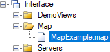
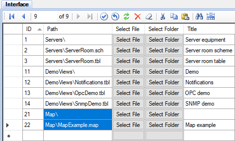

El plugin Maps muestra el estado y los parámetros de las ubicaciones en los mapas interactivos de OpenStreetMap. El complemento permite monitorear sistemas distribuidos geográficamente y navegar a la página de detalles de una ubicación.
Primero debe realizar la secuencia general de instalación de complementosy luego realizar varias acciones adicionales:
Un mapa para Rapid SCADA es una vista La creación y edición de mapas es similar al trabajo con vistas de esquema y tabla.
Las opciones de visualización y las ubicaciones de los mapas se almacenan en un archivo con la extensión map. Los archivos de mapa se deben colocar en el directorio Interface o en un subdirectorio suyo, dentro del proyecto.
El paquete de instalación del complemento contiene un ejemplo del archivo de mapa SCADA\Interface\Map\MapExample.map. Para editar archivos de mapas, use cualquier editor de texto familiar, por ejemplo, Notepad++. Para crear su propio mapa, cree una copia del archivo de ejemplo con un nuevo nombre y edítelo. El nombre del archivo de mapa es arbitrario, la extensión del archivo es map.
La sección Tiling contiene parámetros para conectarse a un servidor de tile (tejas). Los tile se utilizan para componer un fondo de mapa. Hay servidores de tile de diferentes proveedores, tanto pagados como gratuitos.
<Tiling>
<UrlTemplate>https://{s}.tile.openstreetmap.org/{z}/{x}/{y}.png</UrlTemplate>
</Tiling>La sección InitialView (vista inicial) especifica las coordenadas iniciales y la escala del mapa. Una escala es un número entero de 0 a 18.
<InitialView>
<Lat>48.861111</Lat>
<Lon>2.336389</Lon>
<Zoom>13</Zoom>
</InitialView>La sección Locations (ubicaciones) describe un conjunto de ubicaciones que se muestran en el mapa. Consideremos un ejemplo:
<Locations>
<Location>
<Lat>48.858222</Lat>
<Lon>2.2945</Lon>
<Name>Eiffel Tower</Name>
<Descr>Avenue Anatole France, Paris, France</Descr>
<StatusCnlNum>0</StatusCnlNum>
<Data>
<DataItem cnlNum="101" />
<DataItem cnlNum="115">Avg. temp</DataItem>
</Data>
<Link viewID="2" />
</Location>
...
Lat и Lon - latitud y longitud de una ubicación del mapa,
Name - Nombre de la ubicación,
Descr - Descripción adicional,
StatusCnlNum - Número de un canal de entrada que significa el estado de esta ubicación; 0 - canal no especificado, valor positivo del canal significa que la ubicación es normal, de otra forma la ubicación necesita atención,
DataItem - Muestra el dato del ítem asociado con un canal de entrada,
Link - Referencia a una vista que contiene información detallada sobre la ubicación.
Para hacer que el mapa esté visible en el árbol de vistas, es necesario registrarlo en la tabla de Interface utilizando la aplicación Administrador. Especifique la ruta del archivo de mapa (relativa al directorio de la interfaz) e ingrese el título que es el texto del node en el árbol del explorador (ver la figura).


Para ver los cambios en la aplicación Webstation, suba el proyecto al Server y vuelva a iniciar sesión en la aplicación Web. El resultado es: